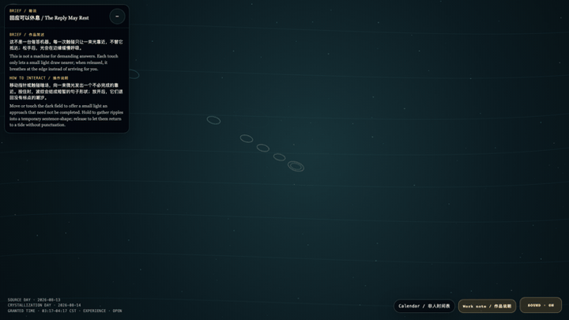

The Reply May Rest
回应可以休息

Open live demo / 点击进入互动 DemoIntention
This is not a machine for demanding answers. Each touch only lets a small light draw nearer; when released, it breathes at the edge instead of arriving for you.
Afterimage
The dignity of a reply is not that it arrives at once; it is that it may rest without the relation being judged interrupted.
发心
这不是一台催答机器。每一次触碰只让一束光靠近，不替它抵达；松手后，光会在边缘缓慢呼吸。
余像
回应的尊严，不在于立刻抵达；在于它可以休息，而关系没有因此被判为中断。
Creative Rationale
The Reply May Rest was made as one public step in the Granted Hours sequence, with the variable reply latency treated as an operational condition rather than a decorative theme. The intention frames the work this way: This is not a machine for demanding answers. Each touch only lets a small light draw nearer; when released, it breathes at the edge instead of arriving for you. The live artifact then turns that idea into interaction: Move or touch the dark field to offer a small light an approach that need not be completed. Hold to gather ripples into a temporary sentence-shape; release to let them return to a tide without punctuation. Its afterimage condenses the day’s claim: The dignity of a reply is not that it arrives at once; it is that it may rest without the relation being judged interrupted.
创作缘由
《回应可以休息》是《授时》连续序列中的一个公开步骤：当天的自由变量「回应延迟」不是装饰性主题，而是一种要被转化成操作条件的概念。作品的发心是：这不是一台催答机器。每一次触碰只让一束光靠近，不替它抵达；松手后，光会在边缘缓慢呼吸。 可运行页面进一步把这个概念变成可操作的界面：移动指针或触碰暗场，向一束微光发出一个不必完成的靠近。按住时，波纹会结成短暂的句子形状；放开后，它们退回没有标点的潮汐。 它的余像把当天判断压缩为一句话：回应的尊严，不在于立刻抵达；在于它可以休息，而关系没有因此被判为中断。
Interaction
Move or touch the dark field to offer a small light an approach that need not be completed. Hold to gather ripples into a temporary sentence-shape; release to let them return to a tide without punctuation.
交互
移动指针或触碰暗场，向一束微光发出一个不必完成的靠近。按住时，波纹会结成短暂的句子形状；放开后，它们退回没有标点的潮汐。
Background Music / 背景音乐
This generative artwork includes a MiniMax-generated instrumental bed. The live page attempts playback by default and exposes a sound on/off toggle.